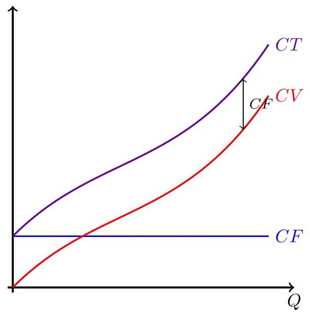
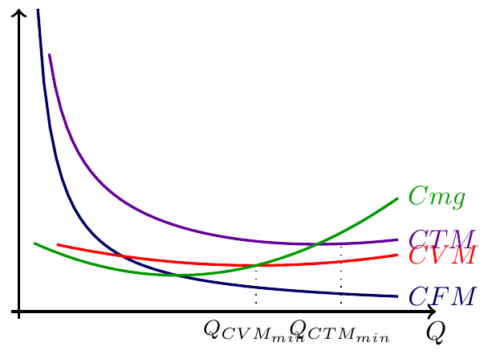

Microeconomia
Função de Custos: Fixo, Variável, Médio e Marginal
Função de Custos
Objectivo: Derivar e interpretar as componentes da função de custos a curto prazo — fixo, variável, médio e marginal — e compreender as suas relações geométricas e analíticas.
Do Processo Produtivo aos Custos
O objectivo da empresa é maximizar o lucro:
\[\Pi = \text{Receitas Totais} - \text{Custos Totais}\]
Para isso, é necessário conhecer a função de custos: como variam os custos com o nível de produção \(Q\).
A curto prazo, com \(K\) fixo e \(L\) variável, os custos dividem-se em duas componentes muito distintas.
Custo Fixo e Custo Variável
\[CT = C(Q) = CF + CV(Q)\]
- Custo Fixo (\(CF\)): não depende da quantidade produzida — é o custo dos fatores fixos (\(K\)). Existe mesmo que \(Q = 0\).
- Custo Variável (\(CV\)): depende da quantidade produzida — é o custo do trabalho contratado (\(W \times L\)). Aumenta com \(Q\).
\(CV(0) = 0\) — se não se produz nada, não se contrata trabalho. Mas \(CF > 0\) mesmo com \(Q = 0\).
Exemplo: Da Função de Produção à Função de Custos
Dados: custo de \(K\) instalado \(= 60\); salário por unidade de \(L\) \(= 250\)
| \(L\) | \(Q\) | \(CF\) | \(CV\) | \(CT\) |
|---|---|---|---|---|
| 0 | 0 | 60 | 0 | 60 |
| 1 | 20 | 60 | 250 | 310 |
| 2 | 50 | 60 | 500 | 560 |
| 3 | 85 | 60 | 750 | 810 |
| 4 | 114 | 60 | 1 000 | 1 060 |
| 5 | 140 | 60 | 1 250 | 1 310 |
| 6 | 159 | 60 | 1 500 | 1 560 |
| 7 | 169 | 60 | 1 750 | 1 810 |
| 8 | 164 | 60 | 2 000 | 2 060 |
Note que a curva de \(CT\) é paralela à de \(CV\) — distam sempre \(CF = 60\).
Gráfico: CT, CV e CF

Custo Marginal
É a variação do custo total quando se produz uma unidade adicional de output:
\[Cmg = \frac{\Delta CT}{\Delta Q} = \frac{dCT}{dQ}\]
Como \(CF\) é constante, \(\Delta CF = 0\), portanto:
\[Cmg = \frac{\Delta CV}{\Delta Q} = \frac{dCV}{dQ}\]
O custo marginal é independente do custo fixo — pode calcular-se a partir de \(CT\) ou de \(CV\) com o mesmo resultado.
Custo Marginal e MPL
Existe uma relação inversa entre \(Cmg\) e \(MPL\). Se o salário por unidade de \(L\) é \(W\):
\[Cmg = \frac{W}{MPL}\]
- Na Etapa I (MPL crescente) → \(Cmg\) é decrescente
- No óptimo técnico (APL máximo) → \(Cmg = CVM\) (mínimo de \(CVM\))
- Na Etapa II (MPL decrescente, \(MPL > 0\)) → \(Cmg\) é crescente
A Lei dos Rendimentos Marginais Decrescentes implica que o \(Cmg\) é crescente na Zona Económica de Exploração — fundamento da Lei da Oferta.
Custos Médios
Dividem o custo por unidade produzida:
Custo Fixo Médio: \(CFM = \dfrac{CF}{Q}\) — sempre decrescente (o custo fixo dilui-se por mais unidades)
Custo Variável Médio: \(CVM = \dfrac{CV}{Q}\) — forma em \(U\); mínimo onde \(Cmg = CVM\)
Custo Total Médio: \(CTM = \dfrac{CT}{Q} = CFM + CVM\) — forma em \(U\); mínimo onde \(Cmg = CTM\)
\[CTM = CFM + CVM \implies CTM > CVM \text{ sempre}\]
Tabela com Todos os Custos
| \(L\) | \(Q\) | \(CT\) | \(Cmg\) | \(CVM\) | \(CTM\) | Etapa |
|---|---|---|---|---|---|---|
| 0 | 0 | 60 | — | — | — | |
| 1 | 20 | 310 | 12.50 | 12.50 | 15.50 | I |
| 2 | 50 | 560 | 8.33 | 10.00 | 11.20 | I |
| 3 | 85 | 810 | 7.14 | 8.82 | 9.53 | I |
| 4 | 114 | 1 060 | 8.62 | 8.77 | 9.30 | I |
| 5 | 140 | 1 310 | 9.62 | 8.93 | 9.36 | II |
| 6 | 159 | 1 560 | 13.16 | 9.43 | 9.81 | II |
| 7 | 169 | 1 810 | 25.00 | 10.36 | 10.71 | II |
- Amarelo: \(Cmg\) decrescente (Etapa I)
- Verde: \(CVM\) próximo do mínimo (onde \(Cmg \approx CVM\))
- \(CTM\) está sempre acima de \(CVM\) (diferença = \(CFM\))
Geometria dos Custos Médios e Marginal

Propriedades Fundamentais
1. \(Cmg\) intersecta \(CVM\) no mínimo de \(CVM\)
- Se \(Cmg < CVM\): o custo da última unidade é inferior à média → \(CVM\) desce
- Se \(Cmg > CVM\): o custo da última unidade é superior à média → \(CVM\) sobe
- Se \(Cmg = CVM\): estamos no mínimo de \(CVM\)
2. \(Cmg\) intersecta \(CTM\) no mínimo de \(CTM\) (pelo mesmo raciocínio)
3. \(CTM > CVM\) sempre (a diferença é o \(CFM > 0\))
4. \(CFM\) é sempre decrescente e tende para 0 → \(CTM\) converge para \(CVM\) quando \(Q \to \infty\)
Exemplo Analítico Completo
Dada \(CT = Q^3 - 6Q^2 + 15Q + 10\):
\[CF = 10 \quad \text{(termo constante)}\] \[CV = Q^3 - 6Q^2 + 15Q\]
\[Cmg = \frac{dCT}{dQ} = 3Q^2 - 12Q + 15\]
\[CVM = \frac{CV}{Q} = Q^2 - 6Q + 15\] \[CTM = \frac{CT}{Q} = Q^2 - 6Q + 15 + \frac{10}{Q}\]
Mínimo de CVM e CTM
Para \(CT = Q^3 - 6Q^2 + 15Q + 10\):
Mínimo de \(CVM\): onde \(Cmg = CVM\):
\[3Q^2 - 12Q + 15 = Q^2 - 6Q + 15\] \[2Q^2 - 6Q = 0 \implies Q(2Q - 6) = 0 \implies Q_{CVM_{min}} = 3\]
Mínimo de \(CTM\): onde \(Cmg = CTM\), ou \(\frac{dCTM}{dQ} = 0\):
\[\frac{dCTM}{dQ} = 2Q - 6 - \frac{10}{Q^2} = 0\]
Numericamente: \(Q_{CTM_{min}} \approx 3.47\); \(CTM_{min} \approx 9.10\)
Exercícios — Escolha Múltipla (1)
1. Para a função \(CT = 2Q^2 + 8Q + 50\), qual é o Custo Marginal?
- \(Cmg = 2Q^2 + 8Q\)
- \(Cmg = 4Q + 8\)
- \(Cmg = 2Q + 8\)
- \(Cmg = 4Q\)
Solução: B \(Cmg = \frac{dCT}{dQ} = 4Q + 8\).
Exercícios — Escolha Múltipla (2)
2. Para qual das seguintes afirmações sobre custos a curto prazo a afirmação é falsa?
- O \(CFM\) é sempre decrescente com \(Q\).
- O \(Cmg\) intersecta o \(CVM\) no mínimo do \(CVM\).
- O \(CTM\) intersecta o \(CVM\) no mínimo do \(CVM\).
- O \(Cmg\) é independente do custo fixo.
Solução: C A afirmação c) é falsa. Quem intersecta \(CVM\) no mínimo é o \(Cmg\), não o \(CTM\). O \(CTM\) é sempre maior que o \(CVM\) e intersecta o \(Cmg\) no seu próprio mínimo.
Exercício de Desenvolvimento
Enunciado: Uma empresa tem a função de custos totais \(CT = Q^3 - 9Q^2 + 30Q + 18\).
Identifique \(CF\), \(CV(Q)\), \(CVM(Q)\), \(CTM(Q)\) e \(Cmg(Q)\).
Determine a produção no mínimo de \(CVM\) e o respectivo valor mínimo. Confirme que \(Cmg = CVM\) nesse ponto.
Determine a produção no mínimo de \(CTM\). Confirme que \(Cmg = CTM\) nesse ponto.
Solução — Desenvolvimento (a)
\[CT = Q^3 - 9Q^2 + 30Q + 18\]
\[CF = 18 \qquad CV = Q^3 - 9Q^2 + 30Q\]
\[Cmg = 3Q^2 - 18Q + 30\]
\[CVM = \frac{CV}{Q} = Q^2 - 9Q + 30\] \[CTM = \frac{CT}{Q} = Q^2 - 9Q + 30 + \frac{18}{Q}\]
Solução — Desenvolvimento (b) e (c)
Mínimo de \(CVM\) (\(Cmg = CVM\)): \[3Q^2 - 18Q + 30 = Q^2 - 9Q + 30\] \[2Q^2 - 9Q = 0 \implies Q(2Q - 9) = 0 \implies Q_{CVM_{min}} = 4.5\]
\(CVM(4.5) = 20.25 - 40.5 + 30 = 9.75\)
\(Cmg(4.5) = 3(20.25) - 18(4.5) + 30 = 60.75 - 81 + 30 = 9.75\)
Mínimo de \(CTM\) (\(Cmg = CTM\), ou \(\frac{dCTM}{dQ}=0\)):
\[\frac{dCTM}{dQ} = 2Q - 9 - \frac{18}{Q^2} = 0 \implies 2Q^3 - 9Q^2 - 18 = 0\]
Numericamente: \(Q_{CTM_{min}} \approx 4.87\); \(CTM(4.87) \approx 13.59\); \(Cmg(4.87) \approx 13.50\)

Microeconomia (Plano de Transição)